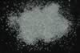

|
|
(For further information on spectroscopy, see:
http://speclab.cr.usgs.gov)
TITLE: Jadeite HS343 DESCRIPT
DOCUMENTATION_FORMAT: MINERAL
SAMPLE_ID: HS343
MINERAL_TYPE: Inosilicate
MINERAL: Jadeite (Pyroxene group)
FORMULA: Na(Al,Fe+3)Si2O6
FORMULA_HTML: Na(Al,Fe+3)Si2O6
COLLECTION_LOCALITY: California
ORIGINAL_DONOR: Hunt and Salisbury Collection
CURRENT_SAMPLE_LOCATION: USGS Denver Spectroscopy Laboratory
ULTIMATE_SAMPLE_LOCATION: USGS Denver Spectroscopy Laboratory
SAMPLE_DESCRIPTION:
"I-9 Jadeite 343B-California. NaAlSi2O6: Jadeite is a comparatively rare pyroxene of metamorphic origin, which is one source of gem quality jade. Ferric iron commonly substitutes for aluminum, which yields the band near 0.8µ and the fall off to the blue. There are very weak ferrous ion features near 1.0µ, as well as weak water bands from fluid inclusions near 1.9 and 2.25µ."
Sieve interval 74 - 250µm.
Hunt, G.R., J.W. Salisbury, and C.J. Lenhoff, 1973, Visible and near-infrared spectra of minerals and rocks: VI. Additional silicates. Modern Geology, v. 4, p. 85-106.
IMAGE_OF_SAMPLE:

END_SAMPLE_DESCRIPTION.
XRD_ANALYSIS:
40 kV - 30 mA, 6.5-9.5 keV
File: jadit343.out, -.mdi
Reference: Borg and Smith (1969)
Found: jadeite + analcite (trace)
Sought but not found: quartz, albite, calcite, aragonite
Comment: Strong, sharp reflections indicate high degree of crystallinity. The
analcite identification is based on two distinct reflections (a third should be
obscured by the jadite (-221)) and its common association with jadeite.
END_XRD_ANALYSIS.
COMPOSITIONAL_ANALYSIS_TYPE: None # XRF, EM(WDS), ICP(Trace), WChem
COMPOSITION_TRACE: None
COMPOSITION_DISCUSSION:
None
END_COMPOSITION_DISCUSSION.
MICROSCOPIC_EXAMINATION:
Not done yet
END_MICROSCOPIC_EXAMINATION.
SPECTROSCOPIC_DISCUSSION:
END_SPECTROSCOPIC_DISCUSSION.
SPECTRAL_PURITY: 1b2c3b4_ # 1= 0.2-3, 2= 1.5-6, 3= 6-25, 4= 20-150 microns
| LIB_SPECTRA_HED: | where | Wave Range | Av_Rs_Pwr | Comment |
|---|---|---|---|---|
| LIB_SPECTRA: | splib04a r 2414 | 0.2-3.0µm | 200 | g.s.= |
| LIB_SPECTRA: | splib05a r 3614 | 0.2-3.0µm | 200 | g.s.= |
| LIB_SPECTRA: | splib06a r 11155 | g.s.= | ||
| LIB_SPECTRA: | splib06a r 11167 | g.s.= |
{kind=link}